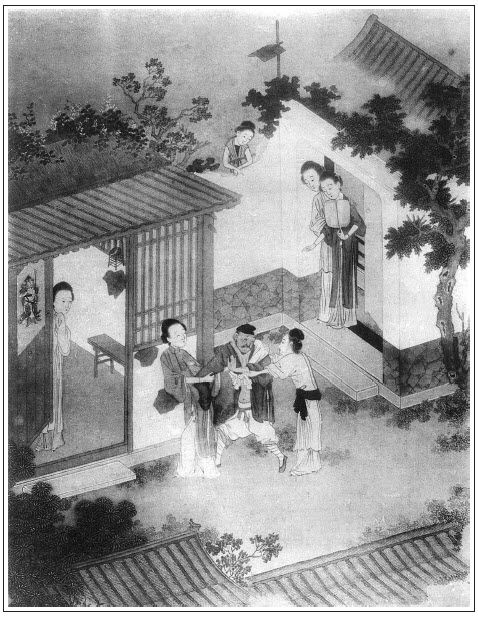

張回夫止知為今道，不肯為人道，則禍患又來，坐地有虎，眼前盡危機矣。
雪娥歸娼，固是報西門慶，卻又寓言梅雪爭春。但雪壓而殘荷不起，今必欲扶起敗荷，勢必委棄殘雪。蓋又寫春梅當日窺時度情，不得不然之勢。然亦順手結住雪娥。下文一死，不過結煞耳，此回已結住矣。其娶雪娥者，必用潘五。蓋言春梅之於雪娥，皆金蓮成其仇也。真與激打一回相照，言我所以做激打一回者，蓋為此地一結用耳，文字分明之甚。而取名玉兒，不過雪之別名。至於寫張勝，乃為殺敬濟之線耳。
寫雞尖湯，特與激打一回銀絲鮓湯相映成章法。
內只用幾個「一推」「一潑」，寫春梅悍妒性急如畫。
詩曰：
骨肉傷殘產業荒，一身何忍去歸娼。
淚垂玉箸辭官舍，步蹴金蓮入教坊。
覽鏡自憐傾國色，向人初學倚門妝。
春來雨露寬如海，嫁得劉郎勝阮郎。張旁大抬舉雪娥。

話說陳敬濟自從謝家酒樓上見了馮金寶，兩個又勾搭上前情。往後沒三日不和他相會，或一日敬濟有事不去，金寶就使陳三兒稍寄物事，或寫情書來叫他去。一次或五錢，或一兩。以後日間供其柴米，納其房錢。張夾比杏庵待己更甚。歸到廟中便臉紅。任道士問他何處吃酒來，敬濟只說：「在米鋪和夥計暢飲三杯，解辛苦來。」他師兄金宗明一力替他遮掩，晚夕和他一處盤弄那勾當，是不必說。朝來暮往，把任道士囊篋中細軟的本錢，也抵盜出大半花費了。張夾了了人家了。
一日，也是合當有事。這洒家店的劉二，有名坐地虎，他是帥府周守備府中親隨張勝的小舅子，張夾特書一人。專一在馬頭上開娼店，倚強凌弱，舉放私債，與巢窩中各娼使用，加三討利。有一不給，搗換文書，將利作本，利上加利。嗜酒行兇，人不敢惹他。就是打粉頭的班頭，欺酒客的領袖。因見陳敬濟是晏公廟任道士的徒弟，白臉小廝，在謝三家大酒樓上，把粉頭鄭金寶兒佔住了，吃的楞楞睜睜，提著碗頭大的拳頭，繡旁恐雞肋不足以安。張夾有聲勢。走來謝家樓下，問：「金寶在那裡？」慌的謝三郎連忙聲喏，說道：「劉二叔叔，他在樓上第二間閣兒裡便是。」這劉二大扠步上樓來。敬濟正與金寶在閣兒裡面飲酒，做一處快活，把房門關閉，外邊簾子掛著。被劉二一把手扯下簾子，大叫：「金寶兒出來！」諕的陳敬濟鼻口內氣兒也不敢出。這劉二用腳把門跺開，金寶兒只得出來相見，說：「劉二叔叔，有何說話？」劉二罵道：「賊淫婦，你少我三個月房錢，卻躲在這裡，就不去了。」金寶笑嘻嘻說道：「二叔叔，你家去，我使媽媽就送房錢來。」這劉二隻摟心一拳，打了老婆一交，把頭顱搶在階沿下磕破，血流滿地，張夾先是粉頭。罵道：「賊淫婦，還等甚送來，我如今就要！」看見陳敬濟在裡面，張夾方入敬濟。走向前把桌子只一掀，碟兒打得粉碎。那敬濟便道：「阿呀，你是甚麼人？走來撒野。」劉二罵道：「我㒲你道士秫秫娘！」張夾敬濟自忘是道士，看官亦忘是道士，劉二眼中自是分明。一手採過頭發來，按在地下，拳捶腳踢無數。
那樓上吃酒的人，看著都立睜了。店主人謝三初時見劉二醉了，不敢惹他，次後見打得人不像模樣，上樓來解勸，說道：「劉二叔，你老人家息怒。他不曉得你老人家大名，誤言衝撞，休要和他一般見識，看小人薄面，饒他去罷。」這劉二那裡依從，盡力把敬濟打了個發昏章第十一。張夾章名如此，不知書名若何？叫將地方保甲，一條繩子，連粉頭都拴在一處墩鎖，分付：「天明早解到老爺府裡去。」原來守備敕書上命他保障地方，巡捕盜賊，兼管河道。這裡拿了敬濟，任道士廟中尚還不知，只說晚夕米鋪中上宿未回。張夾補出。
卻說次日，地方保甲、巡河快手押解敬濟、金寶，雇頭口趕清晨早到府前俟候。先遞手本與兩個管事張勝、李安看，說是劉二叔地方喧鬧一起，晏公廟道士一名陳宗美，娼婦鄭金寶。眾軍牢都問他要錢，說道：「俺們是廳上動刑的，一班十二人，隨你罷。正經兩位管事的，你倒不可輕視了他。」敬濟道：「身邊銀錢倒有，張夾無知小子語。都被夜晚劉二打我時，被人掏摸的去了。身上衣服都扯碎了，那得錢來？止有頭上關頂一根銀簪兒，張夾如此結簪。拔下來，與二位管事的罷。」繡旁還不放此簪。眾牢子拿著那根簪子，走來對張勝、李安如此這般說：「他一個錢兒不拿出來，止與了這根簪兒，還是鬧銀的。」張勝道：「你叫他近前，等我審問他。」眾軍牢不一時擁到跟前跪下，問：「你幾時與任道士做徒弟？俗名叫甚麼？我從未見你。」敬濟道：「小的俗名叫陳敬濟，張夾張勝一問，為後文春梅問故也。原是好人家兒女，做道士不久。」張勝道：「你既做道士，便該習學經典，許你在外宿娼飲酒喧嚷？你把俺帥府衙門當甚麼些小衙門，不拿了錢兒來，這根簪子打水不渾，要他做甚？」還掠與他去。分付牢子：「等住回老爺升廳，把他放在頭一起。眼見這狗男女道士，就是個吝錢的，只許你白要四方施主錢糧！休說你為官事，你就來吃酒赴席，也帶方汗巾兒揩嘴。等動刑時，著實加力拶打這廝。」又把鄭金寶叫上去。鄭家有忘八跟著，上下打發了三四兩銀子。張勝說：「你系娼門，不過趁熟趕些衣食為生，沒甚大事。看老爺喜怒不同，看惱只是一兩拶子；若喜歡，只恁放出來也不知。」不一時，只見裡面雲板響，守備升廳，兩邊僚掾軍牢森列，甚是齊整。但見：
緋羅繳壁，紫綬卓圍。當廳額掛茜羅，四下簾垂翡翠。勘官守正，戒石上刻御制四行；人從謹廉，鹿角旁插令旗兩面。軍牢沉重，僚掾威儀。執大棍授事立階前，挾文書廳旁聽發放。雖然一路帥臣，果是滿堂神道。
當時，沒巧不成話，也是五百劫冤家聚會，姻緣合當湊著。春梅在府中，從去歲八月間，已生了個哥兒小衙內。繡旁信乎有命。張夾先補出。今方半歲光景，貌如冠玉，唇若塗朱。守備喜似席上之珍，愛如無價之寶。未幾，大奶奶下世，守備就把春梅冊正，做了夫人。繡旁母以子貴，果然。張夾先補出。就住著五間正房，買了兩個養娘抱奶哥兒，一名玉堂，一名金匱；張夾兩個好名，卻是二星名。總為春梅一時命運通順來也。兩個小丫鬟伏侍，一名翠花，一名蘭花；又有兩個身邊得寵彈唱的姐兒，都十六七歲，一名海棠，一名月桂，都在春梅房中侍奉。那孫二娘房中止使著一個丫鬟，名喚荷花兒，不在話下。
每常這小衙內，只要張勝抱他外邊頑耍，遇著守備升廳，便在旁邊觀看。當日，守備升廳坐下，放了告牌出去，各地方解進人來。頭一起就叫上陳敬濟並娼婦鄭金寶兒去。守備看了呈狀，便說道：「你這廝是個道士，如何不守清規，宿娼飲酒，騷擾地方，行止有虧。左右拿下去，打二十棍，追了度牒還俗。繡眉敬濟此來，謂禍不可，謂福不可。古云：禍兮福所倚，福兮禍所伏，於焉可想。那娼婦鄭氏，拶一拶，敲五十敲，責令歸院當差。」兩邊軍牢向前，才待扯翻敬濟，攤去衣服，用繩索綁起，轉起棍來，兩邊招呼要打時，可霎作怪，張勝抱著小衙內，正在月台上站立觀看，那小衙內看見打敬濟，便在懷裡攔不住，撲著要敬濟抱。張勝恐怕守備看見，忙走過來。那小衙內亦發大哭起來，直哭到後邊春梅跟前。張夾引入。春梅問：「他怎的哭？」張勝便說：「老爺廳上發放事，打那晏公廟陳道士，他就撲著要他抱，小的走下來，他就哭了。」
這春梅聽見是姓陳的，繡眉只一陳字便經心，時時在念可知。張夾心乎此人。不免輕移蓮步，款蹙湘裙，走到軟屏後面探頭觀覷：「打的那人，聲音模樣，倒好似陳姐夫一般，他因何出家做了道士？」又叫過張勝，問他：「此人姓甚名誰？」張勝道：「這道士我曾問他來，他說俗名叫陳敬濟。」張夾方知張勝一問之妙。春梅暗道：「正是他了。」繡旁關心語。一面使張勝：「請下你老爺來。」這守備廳上打敬濟才打到十棍，一邊還拶著唱的，忽聽後邊夫人有請，分付牢子把棍且閣住休打，一面走下廳來。春梅說道：「你打的那道士，是我姑表兄弟，看奴面上，饒了他罷。」守備道：「夫人何不早說，我已打了他十棍，怎生奈何？」一面出來，分付牢子：「都與我放了。」唱的便歸院去了。守備悄悄使張勝：「叫那道士回來，且休去。問了你奶奶，請他相見。」這春梅才待使張勝請他到後堂相見，忽然沉吟想了一想，張夾雪娥死矣。便又分付張勝：「你且叫那人去著，待我慢慢再叫他。」繡眉滿腔幽情冷思，欲行又止，任慧心人一時索解不來。度牒也不曾追。
這陳敬濟打了十棍，出離了守備府，還奔來晏公廟。不想任道士聽見人來說：「你那徒弟陳宗美，在大酒樓上包著唱的鄭金寶兒，惹了洒家店坐地虎劉二，打得臭死，連老婆都拴了，解到守備府去了。行止有虧，便差軍牢來拿你去審問，追度牒還官。」這任道士聽了，一者老年的著了驚怕，二來身體胖大，因打開囊篋，內又沒有許多細軟東西，著了口重氣，心中痰湧上來，昏倒在地。眾徒弟慌忙向前扶救，請將醫者來灌下藥去，通不省人事。到半夜，嗚呼斷氣身亡。亡年六十三歲。繡眉王杏庵亦未料及此也。第二日，陳敬濟來到，左右鄰人說：「你還敢廟裡去？你師父因為你，如此這般，得了口重氣，昨夜三更鼓死了。」這敬濟聽了，諕的忙忙似喪家之犬，急急如漏網之魚，復回清河縣城中來。正是：
鹿隨鄭相應難辯，蝶化莊周未可知。
話分兩頭。卻說春梅一面使張勝叫敬濟且去著，一面走歸房中，摘了冠兒，脫了繡服，倒在床上，便捫心撾被，聲疼叫喚起來。繡旁情亦太急。張夾做作處與金蓮不同，自是急性人做作。諕的合宅大小都慌了。下房孫二娘來問道：「大奶奶才好好的，怎的就不好起來？」春梅說：「你每且去，休管我。」落後守備退廳進來，見他躺在床上叫喚，也慌了。扯著他手兒問道：「你心裡怎的來？」也不言語，張夾一「不言語」。又問：「那個惹著你來？」也不做聲。張夾二「不做聲」。守備道：「不是我剛才打了你兄弟，你心內惱麼？」亦不應答。繡眉詩曰：「三喚不一應，有何比松柏？」絕似此時情景。張夾三「不應答」，三語如畫，卻是常技。這守備無計奈何，走出外邊麻犯起張勝、李安來了：「你兩個早知他是你奶奶兄弟，如何不早對我說？卻教我打了他十下，惹的你奶奶心中不自在。我曾教你留下他，請你奶奶相見，你如何又放他去了？你這廝每卻討分曉！」張勝說：「小的曾稟過奶奶來，奶奶說且教他去著，小的才放他去了。」一面走入房中，哭哭啼啼，哀告春梅：「望乞奶奶在爺前方便一言。不然，爺要見責小的每哩。」這春梅睜圓星眼，剔起蛾眉，叫過守備近前說：張夾得寵人如此作用。「我自心中不好，干他們甚事？那廝他不守本分，在外邊做道士，且奈他些時，等我慢慢招認他。」繡眉說得近情近理，人決不疑。張夾已留後地。這守備才不麻犯張勝、李安了。
守備見他只管聲喚，又使張勝請下醫官來看脈，說：「老安人染了六欲七情之病，著了重氣在心。」繡眉六欲七情便是相思影子，此醫大通。討將藥來又不吃，都放冷了。丫頭每都不敢向前說話，請將守備來看著吃藥，只呷了一口，就不吃了。繡旁也吃苦了。守備出去了，大丫鬟月桂拿過藥來，「請奶奶吃藥。」被春梅拿過來，匹臉只一潑，張夾一潑。罵道：「賊浪奴才，你只顧拿這苦水來灌我怎的？張夾果然灌怎的。我肚子裡有甚麼？」張夾果然沒什麼。教他跪在面前。孫二娘走來，問道：「月桂怎的？奶奶教他跪著。」海棠道：「奶奶因他拿藥與奶奶吃來，奶奶說：『我肚子裡有甚麼？拿這藥來灌我。』教他跪著。」孫二娘道：「奶奶，你委的今一日沒曾吃甚麼。這月桂他不曉得，奶奶休打他，看我面上，饒他這遭罷。」分付海棠：「你往廚下熬些粥兒來，與你奶奶吃口兒。」春梅於是把月桂放起來。
那海棠走到廚下，用心用意熬了一小鍋粳米濃濃的粥兒，定了四碟小菜兒，用甌兒盛著，熱烘烘拿到房中。春梅躺在床上面朝裡睡，又不敢叫，直待他番身，方才請他：張夾層次寫來。「有了粥兒在此，請奶奶吃粥。」春梅把眼合著，不言語。海棠又叫道：「粥晾冷了，請奶奶起來吃粥。」孫二娘在旁說道：「大奶奶，你這半日沒吃甚麼，這回你覺好些，且起來吃些個。」那春梅一骨碌子扒起來，教奶子拿過燈來，取粥在手，只呷了一口，往地下只一推。繡眉春梅作喬處，不得其情，殊可憎；得其情，見其有腔有板，老著臉兒做作，亦復可笑。張夾一推。早是不曾把傢伙打碎，被奶子接住了。就大吆喝起來，向孫二娘說：「你平白叫我起來吃粥，張夾一語大喓喝。你看賊奴才熬的好粥！我又不坐月子，熬這照麵湯來與我吃怎麼？」分付奶子金匱：「你與我把這奴才臉上打與他四個嘴巴！」當下真個把海棠打了四個嘴巴。張夾借二婢襯入雪娥。孫二娘便道：「奶奶，你不吃粥，卻吃些甚麼兒？卻不餓著你。」春梅道：「你教我吃，我心內攔著，吃不下去。」良久，張夾方入雪娥。叫過小丫鬟蘭花兒來，分付道：「我心內想些雞尖湯兒吃。繡旁題目便摟搜。張夾與肉絲湯相對。你去廚房內，對那淫婦奴才，教他洗手做碗好雞尖湯兒與我吃。教他多放些酸筍，做的酸酸辣辣的我吃。」繡眉人只知春梅器小暴戾，弄驕使勢，孰知其一段冷暖苦心，別有所用。人家妻妾但作此態，便有可疑。孫二娘便說：「奶奶分付他，教雪娥做去。你心下想吃的就是藥。」張夾語亦尖。
這蘭花不敢怠慢，走到廚下對雪娥說：「奶奶教你做雞尖湯，快些做，等著要吃哩。」繡眉緩緩入題，不欲與人看破。原來這雞尖湯，是雛雞脯翅的尖兒碎切的做成湯。這雪娥一面洗手剔甲，旋宰了兩隻小雞，退刷乾淨，剔選翅尖，用快刀碎切成絲，加上椒料、蔥花、芫荽、酸筍、油醬之類，揭成清湯。盛了兩甌兒，用紅漆盤兒，熱騰騰，蘭花拿到房中。春梅燈下看了，呷了一口，怪叫大罵起來：張夾一語怪叫。「你對那淫婦奴才說去，做的甚麼湯！精水寡淡，有些甚味？你們只教我吃，平白叫我惹氣！」慌的蘭花生怕打，連忙走到廚下對雪娥說：「奶奶嫌湯淡，好不罵哩。」這雪娥一聲兒不言語，忍氣吞聲，張夾有層次。從新洗鍋，又做了一碗。多加了些椒料，香噴噴，教蘭花兒拿到房裡來。春梅又嫌忒鹹了，拿起來照地下只一潑，張夾一潑。早是蘭花躲得快，險些兒潑了一身。罵道：「你對那奴才說去，他不憤氣做與我吃。這遭做的不好，教他討分曉。」繡眉嫌好道惡，強尋事端，似從魯仲達打鄭關西中化來。這雪娥聽見，千不合，萬不合，悄悄說了一句：「姐姐幾時這般大了，就抖摟起人來！」繡旁雪娥太不識時務。張夾一路寫來，方入此句不突。不想蘭花回到房裡，告春梅說了。這春梅不聽便罷，聽了此言，登時柳眉剔豎，星眼圓睜，咬碎銀牙，通紅了粉面，大叫：「與我採將那淫婦奴才來！」
須臾，使了奶娘丫鬟三四個，登時把雪娥拉到房中。春梅氣狠狠的一手扯住他頭髮，把頭上冠子跺了，罵道：「淫婦奴才，你怎的說幾時這般大？不是你西門慶家抬舉的我這般大！張夾舊恨深矣，自激打時至此，何日忘之？我買將你來伏侍我，你不憤氣，教你做口子湯，不是精淡，就是苦鹹。你倒還對著丫頭說我幾時恁般大起來，摟搜索落我，要你何用？」一面請將守備來，采雪娥出去，當天井跪著。前邊叫將張勝、李安，旋剝褪去衣裳，打三十大棍。兩邊家人點起明晃晃燈籠，張勝、李安各執大棍伺候。那雪娥只是不肯脫衣裳。守備恐怕氣了他，在跟前不敢言語。張夾如畫。孫二娘在旁邊再三勸道：「隨大奶奶分付打他多少，免褪他小衣罷。不爭對著下人，脫去他衣服，他爺體面上不好看的。只望奶奶高抬貴手，委的他的不是了。」春梅不肯，定要去他衣服打，說道：「那個攔我，我把孩子先摔殺了，然後我也一條繩子吊死就是了。留著他便是了。」繡眉要拔去眼中釘，勢不得不狠毒。然要之以子，挾之以命，亦覺太潑皮無賴矣。張夾挾制得妙，又是月娘舊稿。觀此方知上文寫月娘之丑。於是也不打了，一頭撞倒在地，就直挺挺的昏迷，不省人事。張夾好做作，比月娘更甚。守備諕的連忙扶起，說道：「隨你打罷，沒的氣著你。」當下可憐把這孫雪娥拖番在地，褪去衣服，打了三十大棍，打的皮開肉綻。一面使小牢子半夜叫將薛嫂兒來，即時罄身領出去辦賣。張旁不垂別淚時，非雪娥之計乎？
春梅把薛嫂兒叫在背地，分付：「我只要八兩銀子，將這淫婦奴才好歹與我賣在娼門。隨你轉多少，我不管你。你若賣在別處，我打聽出來，只休要見我。」那薛嫂兒道：「我靠那裡過日子，卻不依你說？」當夜領了雪娥來家。那雪娥悲悲切切，整哭到天明。薛嫂便勸道：「你休哭了，也是你的晦氣，冤家撞在一處。繡旁道盡。老爺見你到罷了，只恨你與他有些舊仇舊恨，折挫你。連老爺也做不得主兒，見他有孩子，凡事依隨他。正經下邊孫二娘也讓他幾分。常言拐米倒做了倉官，說不的了，你休氣哭。」雪娥收淚，謝薛嫂：「只望早晚尋個好頭腦我去，只有飯吃罷。」薛嫂道：「他千萬分付，只教我把你送在娼門。我養兒養女，也要天理。等我替你尋個單夫獨妻，或嫁個小本經紀人家，養活得你來也罷。」那雪娥千恩萬福謝了。
薛嫂過了兩日，只見鄰居一個開店張媽走來叫：「薛媽，你這壁廂有甚娘子？怎的哭的悲切？」薛嫂便道：「張媽，請進來坐。」說道：「便是這位娘子，他是大人家出來的，因和大娘子合不著，打發出來，在我這裡嫁人。情願個單夫獨妻，免得惹氣。」張媽媽道：「我那邊下著一個山東賣綿花客人，姓潘，排行第五，年三十七歲，張夾始終為潘五兒所陷。蓋此時受辱，因敬濟弄一得雙，又是因金蓮，直追本窮源之論。幾車花果，常在老身家安下。前日說他家有個老母有病，七十多歲，死了渾家半年光景，沒人伏侍。再三和我說，替他保頭親事，並無相巧的。我看來這位娘子年紀到相當，嫁與他做個娘子罷。」薛嫂道：「不瞞你老人家說，這位娘子大人家出身，不拘粗細都做的，針指女工，自不必說，又做的好湯水。今才三十五歲。本家只要三十兩銀子，倒好保與他罷。」張媽媽道：「有箱籠沒有？」薛嫂道：「止是他隨身衣服、簪環之類，並無箱籠。」張媽媽道：「既是如此，老身回去對那人說，教他自家來看一看。」說畢，喫茶，坐回去了。晚夕對那人說了，次日飯罷以後，果然領那人來相看。一見了雪娥好模樣兒，年小，一口就還了二十五兩，另外與薛嫂一兩媒人錢。薛嫂也沒爭競，就兌了銀子，寫了文書。晚夕過去，次日就上車起身。薛嫂教人改換了文書，只兌了八兩銀子交到府中春梅收了，只說賣與娼門去了。繡旁寫得有意無意，妙。
那人娶雪娥到張媽家，止過得一夜，到第二日，五更時分，謝了張媽媽，作別上了車，逕到臨清去了。此是六月天氣，日子長，到馬頭上才日西時分。到於洒家店，那裡有百十間房子，都下著各處遠方來的窠子䘕衏唱的。這雪娥一領入一個門戶，半間房子，裡面炕上坐著個五六十歲的婆子，還有個十七頂老丫頭，打著盤頭楂髻，抹著鉛粉紅唇，穿著一弄兒軟絹衣服，在炕邊上彈弄琵琶。這雪娥看見，只叫得苦，才知道那漢子潘五是個水客。張夾到底為潘五所誤，然則六出者，終難與五出者爭也。買他來做粉頭。起了他個名叫玉兒。這小妮子名喚金兒，每日拿廝鑼兒出去，酒樓上接客供唱，做這道路營生。這潘五進門不問長短，把雪娥先打了一頓，睡了兩日，只與他兩碗飯吃，繡眉先打後睡，既睡復餓，教法大奇。教他學樂器彈唱，學不會又打，打得身上青紅遍了。引上道兒，方與他好衣穿，妝點打扮，門前站立，倚門獻笑，眉目嘲人。
正是：
遺蹤堪入時人眼，不買胭脂畫牡丹。
有詩為證：
窮途無奔更無投，南去北來休更休。
一夜彩雲何處散，夢隨明月到青樓。
這雪娥在洒家店，也是天假其便。一日，張勝被守備差遣往河下買幾十石酒麴，宅中造酒。張夾酒是色媒人。這洒家店坐地虎劉二，看見他姐夫來，連忙打掃酒樓乾淨，在上等閣兒裡安排酒餚杯盤，請張勝坐在上面飲酒。酒博士保兒篩酒，稟問：「二叔，下邊叫那幾個唱的上來遞酒？」劉二分付：「叫王家老姐兒，趙家嬌兒，潘家金兒，玉兒四個上來，伏侍你張姑夫。」酒博士保兒應諾下樓。不多時，只聽得胡梯畔笑聲兒，一般兒四個唱的，打扮得如花似朵，都穿著輕紗軟絹衣裳，上的樓來，望上拜了四拜，立在旁邊。這張勝猛睜眼觀看，內中一個粉頭，可霎作怪，「到相老爺宅裡打發出來的那雪娥娘子。他如何做這道路在這裡？」那雪娥亦眉眼掃見是張勝，都不做聲。這張勝便問劉二：「那個粉頭是誰家的？」劉二道：「不瞞姐夫，他是潘五屋裡玉兒、金兒，這個是王老姐，一個是趙嬌兒。」張勝道：「這潘家玉兒，我有些眼熟。」因叫他近前，悄悄問他：「你莫不是雪姑娘麼？怎生到於此處？」那雪娥聽見他問，便簇地兩行淚下，便道：「一言難盡。」如此這般，具說一遍。「被薛嫂攛瞞，把我賣了二十五兩銀子，賣在這裡供筵席唱，接客迎人。」這張勝平昔見他生的好，常是懷心。這雪娥席前慇勤勸酒，兩個說得入港。雪娥和金兒不免拿過琵琶來，唱個詞兒，與張勝下酒。唱畢，彼此穿杯換盞，倚翠偎紅，吃得酒濃時，常言：「世財紅粉歌樓酒，誰為三般事不迷？」這張勝就把雪娥來愛了。兩個晚夕留在閣兒裡，就一處睡了。這雪娥枕邊風月，耳畔山盟，和張勝盡力盤桓，如魚似水，百般難述。張夾西門且奈何。次日起來，梳洗了頭面，劉二又早安排酒餚上來，與他姐夫扶頭。大盤大碗，饕食一頓，收起行裝，餵飽頭口，裝載米曲，伴當跟隨。臨出門，與了雪娥三兩銀子，分付劉二：「好生看顧他，休教人欺負。」自此以後，張勝但來河下，就在洒家店與雪娥相會。往後走來走去，每月與潘五幾兩銀子，就包住了他，不許接人。那劉二自恁要圖他姐夫歡喜，連房錢也不問他要了。張夾找酒樓撒潑一回。各窠窩刮刷將來，替張勝出包錢，包定雪娥柴米。有詩為證：
豈料當年縱意為，張旁品西門。
貪淫倚勢把心欺。
禍不尋人人自取，
色不迷人人自迷。
文回文禹門云：此一回欲使陳、龐湊合一起，而又無因湊合之，又有孫雪娥在旁礙眼，故必先令聞其名，然後羅而致之，方不為無因。於是有劉二撒潑一事，此截搭渡法也。但渡要渡得自然，不要渡得勉強。劉二不過要房錢耳，有金寶鴇子在，何至毆打馮金寶；既打馮金寶，為何又打陳敬濟？或謂酒醉故也。既已並打矣，自有眾人說散，何為又送守備府？小人雖狗仗人勢，然亦自有斟酌，何至凶暴至此，視守備衙門直如張勝衙門也。路非咫尺，事非重大，劉二送之，張勝收之，周志又復打之，此其間方引出春梅來，許多糾纏，著意只在此一處。然未免有許多生拉硬扯，並非水到渠成，有不期然而然之趣，此作者未嘗用心之過也。然亦有用心之過處，春梅已聞敬濟之名，又不便見敬濟之面，有雪娥在焉，作者可謂細心矣。乃頃刻之間，使春梅做出多少故事來。作者以為撒嬌，閱者以為丟醜，越看越醜，丑至令人不敢看。不但露出丫頭原形，直畫出潑婦本色，作者何必醜詆春梅一至於此也。批者又何不雲羞殺春梅，丑絕春梅乎？雪娥為春梅所買，即欲逐而賣之，甚易之也。必須裝此醜態，出此醜言，始能出春梅而入敬濟乎？此一層未免多費筆墨矣。噫嘻！又安知非作者有意描寫春梅醜態，以醒閱者眼目？直若明告之日：玉樓與春梅，其為人底裡，試看其收場，便可知矣。
西門慶家中，並無一個好東西，不要稱讚玉樓，推許春梅，方不是瞎子也。不然，孫雪娥亦何必定令其為娼，蓋亦以寫西門慶之惡，出西門慶之丑也。必用雪娥者，嬌、玉、蓮、瓶，皆其奪諸人者，惟雪娥乃其所自有之四娘也。不使月娘偷人嫁人，還是作者存心忠厚處。